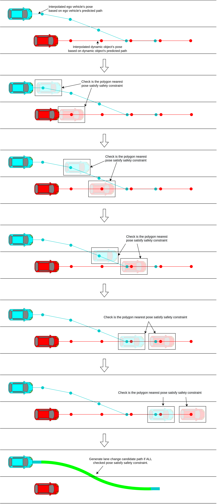
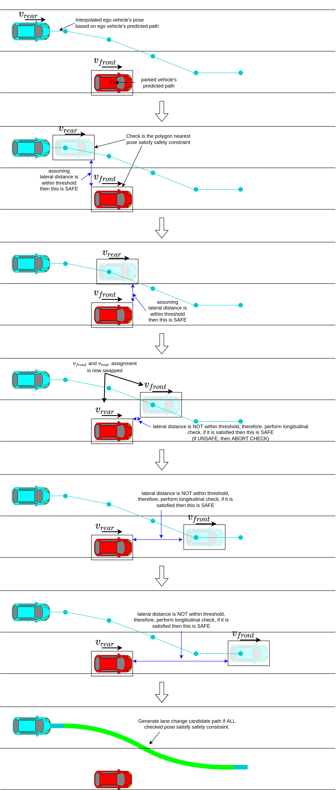
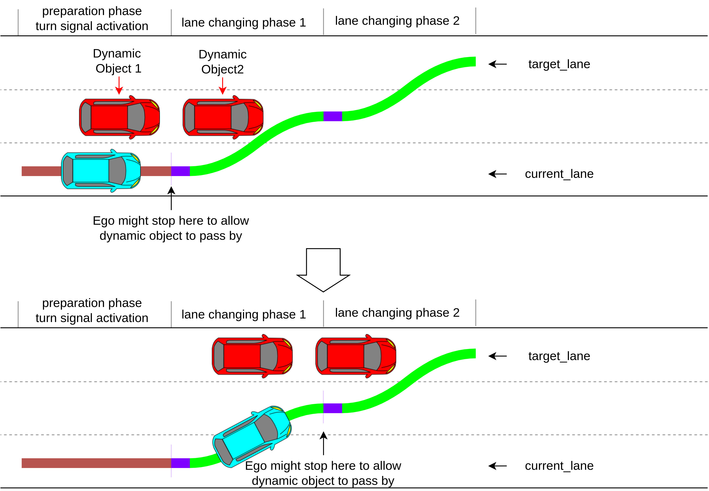
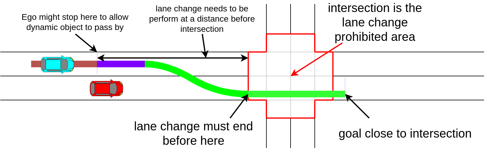
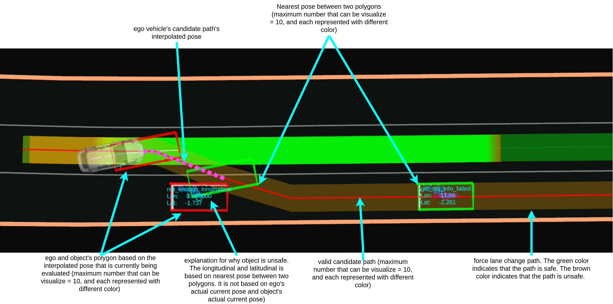

Lane Change#
The Lane Change module is activated when lane change is needed and can be safely executed.
Lane Change Requirement#
- During lane change request condition
- The ego-vehicle isn’t on a
preferred_lane. - There is neither intersection nor crosswalk on the path of the lane change
- The ego-vehicle isn’t on a
- lane change ready condition
- Path of the lane change does not collide with other dynamic objects (see the figure below)
- Lane change candidate path is approved by an operator.
Generating Lane Change Candidate Path#
The lane change candidate path is divided into two phases: preparation and lane-changing. The following figure illustrates each phase of the lane change candidate path.

Preparation phase#
The preparation trajectory is the candidate path's first and the straight portion generated along the ego vehicle's current lane. The length of the preparation trajectory is computed as follows.
lane_change_prepare_distance = max(current_speed * lane_change_prepare_duration + 0.5 * deceleration * lane_change_prepare_duration^2, minimum_lane_change_prepare_distance)
During the preparation phase, the turn signal will be activated when the remaining distance is equal to or less than lane_change_search_distance.
Lane-changing phase#
The lane-changing phase consist of the shifted path that moves ego from current lane to the target lane. Total distance of lane-changing phase is as follows.
lane_change_prepare_velocity = current_speed + deceleration * lane_change_prepare_duration
lane_changing_distance = max(lane_change_prepare_velocity * lane_changing_duration + 0.5 * deceleration * lane_changing_duration^2, minimum_lane_change_length + backward_length_buffer_for_end_of_lane)
The backward_length_buffer_for_end_of_lane is added to allow some window for any possible delay, such as control or mechanical delay during brake lag.
Multiple candidate path samples#
Lane change velocity is affected by the ego vehicle's current velocity. High velocity requires longer preparation and lane changing distance. However we also need to plan lane changing trajectories in case ego vehicle slows down.
Computing candidate paths that assumes ego vehicle's slows down is performed by substituting predetermined deceleration value into lane_change_prepare_distance, lane_change_prepare_velocity and lane_changing_distance equation.
The predetermined deceleration are a set of value that starts from deceleration = 0.0, and decrease by acceleration_resolution until it reachesdeceleration = -maximum_deceleration. The acceleration_resolution is determine by the following
acceleration_resolution = maximum_deceleration / lane_change_sampling_num
The following figure illustrates when lane_change_sampling_num = 4. Assuming that maximum_deceleration = 1.0 then a0 == 0.0 == no deceleration, a1 == 0.25, a2 == 0.5, a3 == 0.75 and a4 == 1.0 == maximum_deceleration. a0 is the expected lane change trajectories should ego vehicle do not decelerate, and a1's path is the expected lane change trajectories should ego vehicle decelerate at 0.25 m/s^2.

Which path will be chosen will depend on validity and collision check.
Candidate Path's validity check#
A candidate path is valid if the total lane change distance is less than
- distance to the end of current lane
- distance to the next intersection
- distance from current pose to the goal.
- distance to the crosswalk.
The goal must also be in the list of the preferred lane.
The following flow chart illustrates the validity check.
![uml diagram]()
Candidate Path's Safety check#
Valid candidate path is evaluated for safety before is was selected as the output candidate path. The flow of the process is as follows.
![uml diagram]()
If all valid candidate path is unsafe, then the operator will have the option to perform force lane change by using the front-most candidate path as the output. The force lane change will ignore all safety checks.
A candidate path's is safe if it satisfies the following lateral distance criteria,
lateral distance > lateral_distance_threshold
However, suppose the lateral distance is insufficient. In that case, longitudinal distance will be evaluated. The candidate path is safe only when the longitudinal gap between the ego vehicle and the dynamic object is wide enough.
The following charts illustrate the flow of the safety checks
![uml diagram]()
Calculating and evaluating longitudinal distance#
A sufficient longitudinal gap between vehicles will prevent any rear-end collision from happening. This includes an emergency stop or sudden braking scenarios.
The following information is required to evaluate the longitudinal distance between vehicles
- estimated speed of the dynamic objects
- predicted path of dynamic objects
- ego vehicle's current speed
- ego vehicle's predicted path (converted/estimated from candidate path)
The following figure illustrates how the safety check is performed on ego vs. dynamic objects.

Let v_front and a_front be the front vehicle's velocity and deceleration, respectively, and v_rear and a_rear be the rear vehicle's velocity and deceleration, respectively.
Front vehicle and rear vehicle assignment will depend on which predicted path's pose is currently being evaluated.
The following figure illustrates front and rear vehicle velocity assignment.

Assuming the front vehicle brakes, then d_front is the distance the front vehicle will travel until it comes to a complete stop. The distance is computed from the equation of motion, which yield.
d_front = -std::pow(v_front,2) / (2*a_front)
Using the same formula to evaluate the rear vehicle's stopping distance d_rear is insufficient. This is because as the rear vehicle's driver saw the front vehicle's sudden brake, it will take some time for the driver to process the information and react by pressing the brake. We call this delay the reaction time.
The reaction time is considered from the duration starting from the driver seeing the front vehicle brake light until the brake is pressed. As the brake is pressed, the time margin (which might be caused by mechanical or control delay) also needs to be considered. With these two parameters included, the formula for d_rear will be as follows.
d_rear = v_rear * rear_vehicle_reaction_time + v_rear * rear_vehicle_safety_time_margin + (-std::pow(v_front,2) / 2 * a_rear)
Since there is no absolute value for the decelerationa_front and a_rear, both of the values are parameterized (expected_front_deceleration and expected_rear_deceleration, respectively) with the estimation of how much deceleration will occur if the brake is pressed.
The longitudinal distance is evaluated as follows
d_rear < d_front + d_inter
where d_inter is the relative longitudinal distance obtained at each evaluated predicted pose.
Finally minimum longitudinal distance for d_rear is added to compensate for object to near to each other when d_rear = 0.0. This yields
std::max(longitudinal_distance_min_threshold, d_rear) < d_front + d_inter
Collision check in prepare phase#
The ego vehicle may need to secure ample inter-vehicle distance ahead of the target vehicle before attempting a lane change. The flag enable_collision_check_at_prepare_phase can be enabled to gain this behavior. The following image illustrates the differences between the false and true cases.

The parameter prepare_phase_ignore_target_speed_thresh can be configured to ignore the prepare phase collision check for targets whose speeds are less than a specific threshold, such as stationary or very slow-moving objects.
If the lane is blocked and multiple lane changes#
When driving on the public road with other vehicles, there exist scenarios where lane changes cannot be executed. Suppose the candidate path is evaluated as unsafe, for example, due to incoming vehicles in the adjacent lane. In that case, the ego vehicle can't change lanes, and it is impossible to reach the goal. Therefore, the ego vehicle must stop earlier at a certain distance and wait for the adjacent lane to be evaluated as safe. The minimum stopping distance computation is as follows.
minimum_lane_change_distance = num_of_lane_changes * (minimum_lane_change_length + backward_length_buffer_for_end_of_lane)
The following figure illustrates when the lane is blocked in multiple lane changes cases.

Intersection#
Lane change in the intersection is prohibited following traffic regulation. Therefore, if the goal is place close passed the intersection, the lane change needs to be completed before ego vehicle enters the intersection region. Similar to the lane blocked case, in case of the path is unsafe, ego vehicle will stop and waits for the dynamic object to pass by.
The following figure illustrate the intersection case.

Aborting lane change#
The abort process may result in three different outcome; Cancel, Abort and Stop/Cruise.
The following depicts the flow of the abort lane change check.
![uml diagram]()
Cancel#
Suppose the lane change trajectory is evaluated as unsafe. In that case, if the ego vehicle has not departed from the current lane yet, the trajectory will be reset, and the ego vehicle will resume the lane following the maneuver.
The function can be enabled by setting enable_cancel_lane_change to true.
The following image illustrates the cancel process.

Abort#
Assume the ego vehicle has already departed from the current lane. In that case, it is dangerous to cancel the path, and it will cause the ego vehicle to change the heading direction abruptly. In this case, planning a trajectory that allows the ego vehicle to return to the current path while minimizing the heading changes is necessary. In this case, the lane change module will generate an abort path. The following images show an example of the abort path. Do note that the function DOESN'T GUARANTEE a safe abort process, as it didn't check the presence of the surrounding objects and/or their reactions. The function can be enable manually by setting both enable_cancel_lane_change and enable_abort_lane_change to true. The parameter abort_max_lateral_jerk need to be set to a high value in order for it to work.

Stop/Cruise#
The last behavior will also occur if the ego vehicle has departed from the current lane. If the abort function is disabled or the abort is no longer possible, the ego vehicle will attempt to stop or transition to the obstacle cruise mode. Do note that the module DOESN'T GUARANTEE safe maneuver due to the unexpected behavior that might've occurred during these critical scenarios. The following images illustrate the situation.

Parameters#
Essential lane change parameters#
The following parameters are configurable in lane_change.param.yaml.
| Name | Unit | Type | Description | Default value |
|---|---|---|---|---|
lane_change_prepare_duration |
[m] | double | The preparation time for the ego vehicle to be ready to perform lane change. | 4.0 |
lane_changing_safety_check_duration |
[m] | double | The total time that is taken to complete the lane-changing task. | 8.0 |
minimum_lane_change_prepare_distance |
[m] | double | Minimum prepare distance for lane change | 2.0 |
minimum_lane_change_length |
[m] | double | The minimum distance needed for changing lanes. | 16.5 |
backward_length_buffer_for_end_of_lane |
[m] | double | The end of lane buffer to ensure ego vehicle has enough distance to start lane change | 2.0 |
lane_change_finish_judge_buffer |
[m] | double | The additional buffer used to confirm lane change process completion | 3.0 |
lane_changing_lateral_jerk |
[m/s3] | double | Lateral jerk value for lane change path generation | 0.5 |
lane_changing_lateral_acc |
[m/s2] | double | Lateral acceleration value for lane change path generation | 0.5 |
minimum_lane_change_velocity |
[m/s] | double | Minimum speed during lane changing process. | 2.78 |
prediction_time_resolution |
[s] | double | Time resolution for object's path interpolation and collision check. | 0.5 |
maximum_deceleration |
[m/s^2] | double | Ego vehicle maximum deceleration when performing lane change. | 1.0 |
lane_change_sampling_num |
[-] | int | Number of possible lane-changing trajectories that are being influenced by deceleration | 10 |
Collision checks during lane change#
The following parameters are configurable in behavior_path_planner.param.yaml.
| Name | Unit | Type | Description | Default value |
|---|---|---|---|---|
lateral_distance_max_threshold |
[m] | double | The lateral distance threshold that is used to determine whether lateral distance between two object is enough and whether lane change is safe. | 2.0 |
longitudinal_distance_min_threshold |
[m] | double | The longitudinal distance threshold that is used to determine whether longitudinal distance between two object is enough and whether lane change is safe. | 3.0 |
expected_front_deceleration |
[m/s^2] | double | The front object's maximum deceleration when the front vehicle perform sudden braking. (*1) | -1.0 |
expected_rear_deceleration |
[m/s^2] | double | The rear object's maximum deceleration when the rear vehicle perform sudden braking. (*1) | -1.0 |
rear_vehicle_reaction_time |
[s] | double | The reaction time of the rear vehicle driver which starts from the driver noticing the sudden braking of the front vehicle until the driver step on the brake. | 2.0 |
rear_vehicle_safety_time_margin |
[s] | double | The time buffer for the rear vehicle to come into complete stop when its driver perform sudden braking. | 2.0 |
enable_collision_check_at_prepare_phase |
[-] | boolean | Perform collision check starting from prepare phase. If false, collision check only evaluated for lane changing phase. |
true |
prepare_phase_ignore_target_speed_thresh |
[m/s] | double | Ignore collision check in prepare phase of object speed that is lesser that the configured value. enable_collision_check_at_prepare_phase must be true |
0.1 |
use_predicted_path_outside_lanelet |
[-] | boolean | If true, include collision check for predicted path that is out of lanelet (freespace). | false |
use_all_predicted_path |
[-] | boolean | If false, use only the predicted path that has the maximum confidence. | true |
(*1) the value must be negative.
Abort lane change#
The following parameters are configurable in lane_change.param.yaml.
| Name | Unit | Type | Description | Default value |
|---|---|---|---|---|
enable_cancel_lane_change |
[-] | boolean | Enable cancel lane change | true |
enable_abort_lane_change |
[-] | boolean | Enable abort lane change. | false |
abort_delta_time |
[s] | double | The time taken to start aborting. | 3.0 |
abort_max_lateral_jerk |
[s] | double | The maximum lateral jerk for abort path | 1000.0 |
Debug#
The following parameters are configurable in lane_change.param.yaml.
| Name | Unit | Type | Description | Default value |
|---|---|---|---|---|
publish_debug_marker |
[-] | boolean | Flag to publish debug marker | false |
Debug Marker & Visualization#
To enable the debug marker, execute ros2 param set /planning/scenario_planning/lane_driving/behavior_planning/behavior_path_planner lane_change.publish_debug_marker true (no restart is needed) or simply set the publish_debug_marker to true in the lane_change.param.yaml for permanent effect (restart is needed). Then add the marker /planning/scenario_planning/lane_driving/behavior_planning/behavior_path_planner/debug/lanechange in rviz2.
